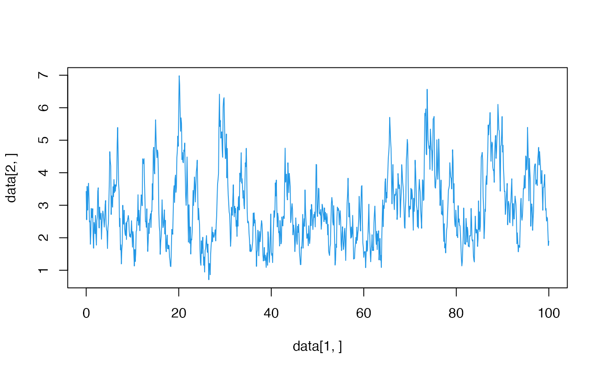

simCIR.RdThis is a function to simulate a Cox-Ingersoll-Ross process given via the SDE
\(\mathrm{d} X_t = (\alpha-\beta X_t)\mathrm{d} t + \sqrt{\gamma X_t}\mathrm{d} W_t\)
with a Brownian motion \((W_t)_{t\geq 0}\) and parameters \(\alpha,\beta,\gamma>0.\) We use an exact CIR simulator for \((X_{t_j} )_{j=1,\dots,n}\) through the non-central chi-squares distribution.
simCIR(time.points, n, h, alpha, beta, gamma, equi.dist=FALSE )numbers given as in the SDE above.
a logical value indicating whether the sampling points are equidistant (default equi.dist=FALSE).
a number indicating the quantity of sampling points in the case equi.dist=TRUE.
a number indicating the step size in the case equi.dist=TRUE.
a numeric vector of sampling times (necessary if equi.dist=FALSE).
A numeric matrix containing the realization of \((t_0,X_{t_0}),\dots, (t_n,X_{t_n})\) with \(t_j\) denoting the \(j\)-th sampling times.
S. J. A. Malham and A. Wiese. Chi-square simulation of the CIR process and the Heston model. Int. J. Theor. Appl. Finance, 16(3):1350014, 38, 2013.
## You always need the parameters alpha, beta and gamma
## Additionally e.g. time.points
data <- simCIR(alpha=3,beta=1,gamma=1,
time.points = c(0,0.1,0.2,0.25,0.3))
## or n, number of observations, h, distance between observations,
## and equi.dist=TRUE
data <- simCIR(alpha=3,beta=1,gamma=1,n=1000,h=0.1,equi.dist=TRUE)
plot(data[1,],data[2,], type="l",col=4)

## If you input every value and equi.dist=TRUE, time.points are not
## used for the simulations.
data <- simCIR(alpha=3,beta=1,gamma=1,n=1000,h=0.1,
time.points = c(0,0.1,0.2,0.25,0.3),
equi.dist=TRUE)
## If you leave equi.dist=FALSE, the parameters n and h are not
## used for the simulation.
data <- simCIR(alpha=3,beta=1,gamma=1,n=1000,h=0.1,
time.points = c(0,0.1,0.2,0.25,0.3))